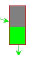

Your router has been configured so the outbound eth0 interfaces is the bottleneck link for your download. This means that the occupancy of queue will be affected by TCP congestion control. |
 |
|
Double click on the queue to bring up its properties window and click on the ''Show Queue Size / Time'' button to see a real-time graph of queue occupancy. |